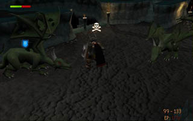
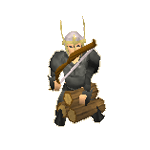
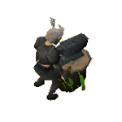

Barbarian Training
Introduction

Otto Godblessed, who lives near the Baxtorian Falls, has been researching his cultural history and rediscovering the ancient arts and disciplines of his people, and now he is ready to teach them to others. You'll need to be strong and dedicated, not to mention already quite talented in a number of skills, but the rewards are well worth it.
Getting Started
To start learning the barbarians' training methods, you should head to the west side of Baxtorian Falls to find Otto Godblessed in his hut. Otto will offer to teach anyone his skills, but only those with sufficient talent will be able to make full use of his knowledge.
Simply speaking to Otto will start you on the path of the barbarian. Once you have completed one of his educational tasks, you will be advised to return to Otto to acquire further learning.
 If you have not already received one, Otto will also give you a book to record what he teaches you. You can use this book to remind yourself of what you should be doing to advance to the next stage of his teaching.
If you have not already received one, Otto will also give you a book to record what he teaches you. You can use this book to remind yourself of what you should be doing to advance to the next stage of his teaching.
The Skills
The following skills are affected by Otto's teachings. Click on the skill name to find out more:
|  |  |
 |
 | |||
| Firemaking
Use a bow to start fires without a tinderbox; set pyre ships alight to help your Prayer skill. |
Fishing
Learn to extract roe from fish to enhance your potions; catch fish without a harpoon. |
Herblore
Improve your potions with roe and caviar. |
Smithing
Learn to smith the traditional barbarian hasta - a one-handed spear. |
The Ancient Cavern
Once you have reached a sufficient stage in your training, Otto will direct you to a magical whirlpool in the lake next to his house. The spirits that maintain the whirlpool will safely transport anyone worthy to the Ancient Cavern where barbarians once did battle with the mightiest of beasts.
The caves are full of very high-level monsters, and only those well-prepared should attempt to travel there. Of course, the ancient beasts that dwell there have long hoarded treasures, so the rewards can be very great indeed...
You can click here to read more about the Ancient Cavern.

More articles in
Miscellaneous Guides
|
|
|
Further Help
Need more help? Come chat with us!
|
|